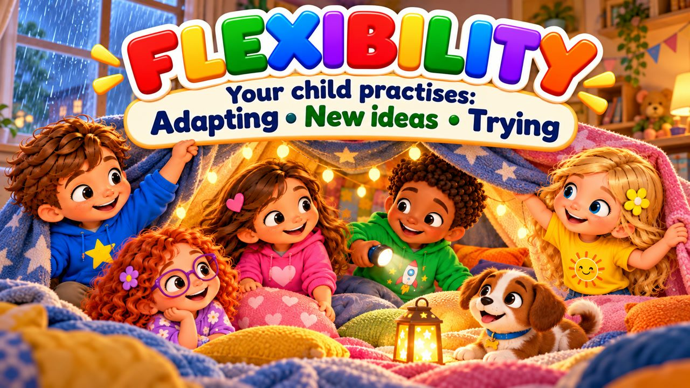
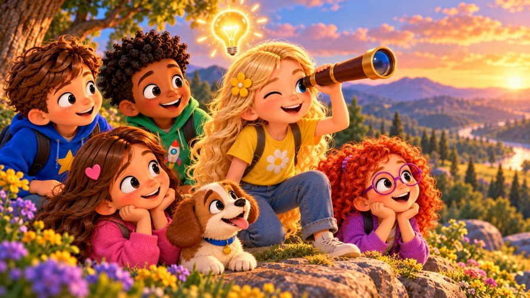
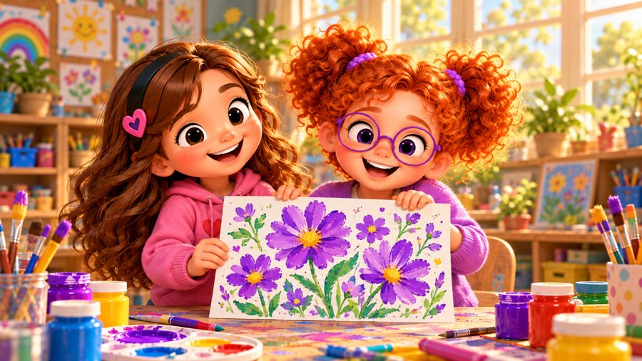

Plans Can Change
A song about flexible thinking! 🌈 Sing along with Max, Mia, Jay, Lily, Rosie and Buddy the puppy as rain spoils park day, the purple paint runs out and the toy track breaks — and every time they take a breath, look around and find another way.
"Plans Can Change!" is a sing-along song for kids about flexibility and handling disappointment. When it rains, the kids build a blanket fort instead; when there's no purple, Rosie and Lily mix red and blue; when the track cracks, Jay and Max build a bridge. With karaoke lyrics on screen, it's perfect for preschool, kindergarten and early elementary kids (ages 3–8), at home or in the classroom.

▶💡 Why this skill matters: flexibility
Life is full of changes — rain on park day, a missing toy, a new routine. Flexible children can feel disappointed, take a breath and find another way, instead of melting down. This helps them cope with transitions, new situations and surprises. When plans change, name the feeling first, then ask together: “What else could we do?”
👨👩👧 What your child learns
- It's okay to feel disappointed when plans change
- Take a calm breath, then look around
- Ask: "What else could work?"
- Try something new — a different plan can still be a good plan
- Flexible thinking helps with transitions and surprises
💬 Talk about it after the song
- What did you notice in the song?
- How did the friends feel?
- Where could we practise this skill at home?
🏅 Quiz & Certificate
Watched the song together? Now read each question aloud — your child points to the right picture. Answer all 6 questions and your child earns a printable certificate!
🔒 The name is only used to draw the certificate on your device. We don't save or send anything.
You did it! 🎉
All 6 answers are right! Type your child's name to make the certificate.
🖨️ Free printables
Free for home and classroom use. Print on A4 or Letter paper.
🖼️ Scenes from the song






🎵 More songs


🎤 Lyrics – Plans Can Change
We had a plan,
we knew just what to do...
But sometimes plans
can change on you!
Take a breath,
look around...
Maybe there's
another way to be found!
The kids were ready
for the park.
Shoes were on,
they couldn't wait to start!
But when they opened up the door...
RAIN!
It started pouring
more and more!
Max frowned:
"But that was our plan!"
Mia said,
"I understand.
We can feel disappointed...
Then make a brand-new plan!"
They moved the games
inside instead,
Built a fort
with sheets and beds.
The park would wait
for another day...
And they still found
a way to play!
Something changed?
That's okay.
I can find
another way.
Take a breath,
look and see...
What else could work
for me?
Plans can change!
Plans can change!
Things won't always
stay the same!
Take a breath,
think again...
Maybe we can
make a different plan!
Bend a little!
Try something new!
There's another way
that we can choose!
I can change,
I can rearrange...
When plans change,
I can change too!
Rosie wanted
the purple paint,
But there was none
left in the tray.
"Oh no!
I needed purple
for my picture today!"
She almost stopped
and put it down...
Then Lily looked
at all the colors around.
"Could we mix
red and blue?"
Rosie smiled:
"Let's see what they do!"
They mixed the colors,
swirled them round...
And purple suddenly
was found!
The plan had changed,
but that was fine...
Sometimes new ideas
turn out great!
Something changed?
That's okay.
I can find
another way.
Take a breath,
look and see...
What else could work
for me?
Plans can change!
Plans can change!
Things won't always
stay the same!
Take a breath,
think again...
Maybe we can
make a different plan!
Bend a little!
Try something new!
There's another way
that we can choose!
I can change,
I can rearrange...
When plans change,
I can change too!
Jay and Max
were building a track,
But one big piece
had a crack.
"We can't build it
like we planned!"
For a moment,
both just stared.
Then Jay said,
"What else could work?"
Max looked around
and found some blocks.
They made a bridge,
changed the track...
And soon the cars
were racing back!
Not exactly
what they planned...
But still a pretty
awesome plan!
The weather changed?
NEW PLAN!
Something's missing?
LOOK AROUND!
That idea didn't work?
TRY ANOTHER!
Feeling disappointed?
TAKE A BREATH!
Can plans change?
YES, THEY CAN!
Can I change too?
YES, I CAN!
What do flexible thinkers do?
FIND ANOTHER WAY!
Being flexible
doesn't mean
I have to like every change.
Sometimes
I may feel disappointed.
That's okay.
I can feel it...
take a breath...
and then ask:
"What can I do now?"
A different plan
can still be
a good plan.
Plans can change!
Plans can change!
Things won't always
stay the same!
Take a breath!
Look around!
There's another way
that can be found!
Try again!
Change the plan!
I can be flexible —
yes, I can!
Different road!
Different way!
I can still
have a great day!
I can change,
I can rearrange...
When plans change,
I can change too!
PLANS CAN CHANGE!
AND I CAN TOO!
Not the plan
I had before...
Maybe there's
another door.
Take a breath...
look around...
A brand-new plan
can still be found!